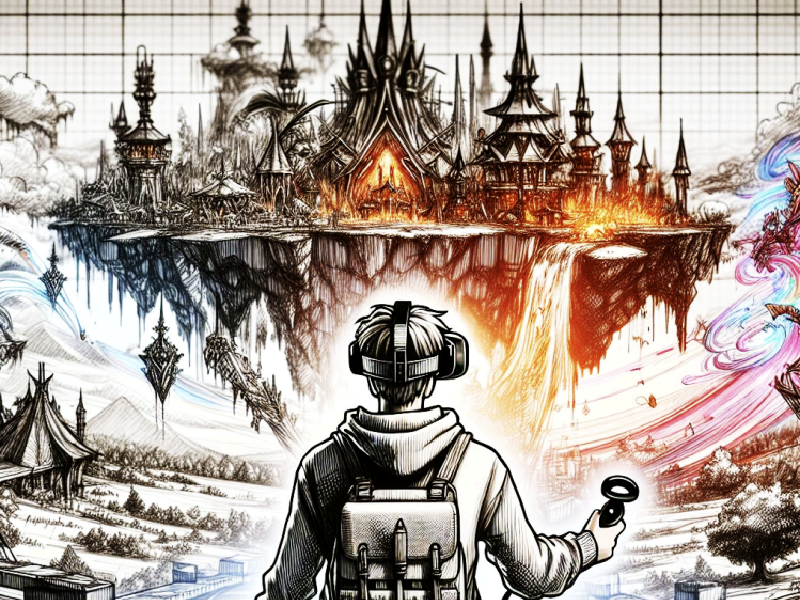

Adrian Guerra's Portfolio
Technical Game Designer
Technical Game Designer with over 10 years of programming training, starting in vocational education and developed through higher studies and professional experience. Specialized in gameplay systems architecture and player experience refinement.
Expert in Unreal Engine (C++/Blueprints) and Unity (C#), with strong skills in VR/XR development. Passionate about creating mechanics that are both technically robust and emotionally satisfying for players.
Current interests: Japanese language learning, 3D animation, and exploring AI applications.
Technical Skills
Unity Engine
Unreal Engine
VR/XR Development
Programming
Technical Design
3D Modeling
Spanish
English
Japanese
Resume
Professional Experience
VR Developer Intern
Jan/2025 - May/2025
Faculty of Earth Sciences, University of Barcelona, Spain
- Defined goals and functionalities for a 3D model viewer and drafted the design document.
- Compared game engines and development tools for VR model visualization.
- Developed a point cloud to .fbx model converter.
- Created an export plugin for Nanite models to .pak format and runtime import support.
- Evaluated and documented both proprietary and third-party plugins.
- Designed an ergonomic user interface for immersive interaction.
Virtual Reality Laboratory Technician
Nov/2022 - Jul/2024
ENTI, Barcelona, Spain
- Inventory, care and maintenance of equipment.
- Reserve and loan management.
- Documentation of peripherals and demonstrators/testers.
Jr. Programmer
May/2019 - Sep/2019
ConsultiaIT, Barcelona, Spain
- Helpdesk and incident resolution for Baxi technicians.
- Testing and debugging web apps and PDAs used by company staff.
Computer Technician
Jan/2018 - May/2018
Everis BPO, Barcelona, Spain
- On-site technical support and software installations.
- Macro development with Visual Basic 6.0.
- Access database creation and documentation writing.
Education
University Degree, Interactive Digital Content Creation
2019 - Currently
ENTI, Barcelona, Spain
Certificate of Higher Education, Multiplatform App Development
2016 - 2019
Institut Marianao, Sant Boi de Llobregat, Spain
Vocational Training, Microcomputer and Network Technician
2012 - 2015
Institut Marianao, Sant Boi de Llobregat, Spain
Featured Projects



Project Archive


Contact
Seeking opportunities as a Technical Game Designer focused on gameplay systems, interaction design, and game feel polish. Experienced in VR/XR development but open to diverse game projects where technical design skills can elevate player experience.
Get In Touch